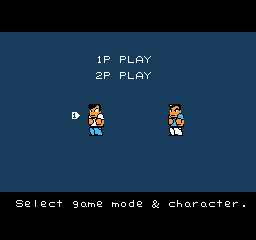
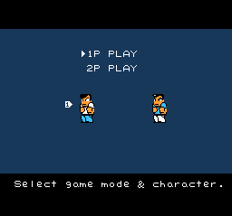
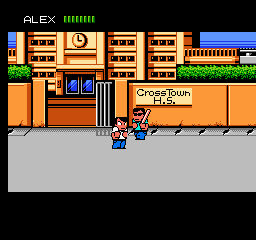
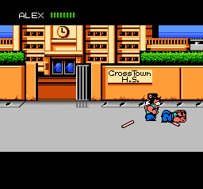
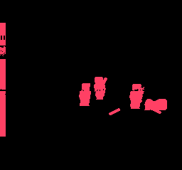

STRUKTURED LABS / DEVELOPMENT EVIDENCERiver City Ransom
NES → SNES port audit
These screenshots come from original game code executing on the SNES CPU. They are NOT static renderer fixtures. CPU progress and adapter faults are checked, but reference and candidate timing/input schedules are not synchronized. Pixel scores expose differences; they do not establish gameplay fidelity. Scrolling, raster IRQs, speed, and audio accuracy remain incomplete.
Original graphics, no replacement artwork. Comparisons use the top 239 NES rows to match SNES overscan output, with both sides reduced to 5-bit colour precision. The NES's final row is outside this hardware comparison. No alignment search or image rescaling is used for the scores.
Reviews save in this browser, keyed to each exact candidate and evidence hash. Export to share them; new evidence starts unreviewed.
Live menu: NES frame 600 / SNES frame 1800 (not synchronized)
16 mismatched pixels / 61,184

NES reference
SNES hardware output5-bit colour differenceExact evidence identity
{
"rom_sha256": "c03c27a625d91c268f6bbbb958db256bf2f8dcf8a06804ee37809dbd340129b1",
"reference_sha256": "5dd75eee3924da95d19f9fe91662d7467695ba03d2aa218dad96be8c9e4a467b",
"actual_sha256": "f95ebc9d88e4e3a0bcd5438d7356057e71eaac94c00ae1ad6883bb8905db2675",
"core_sha256": "2e05b2f9a24293fbcdd030d8c117d067dda9533025896365685078d07a1a22e5",
"evidence_sha256": "e19ea47135c5990968615b8d17c13d6bcf7f779746fbb8034e42007672128ac6"
}Live street: NES frame 1800 / SNES frame 3600 (not synchronized)
3,134 mismatched pixels / 61,184

NES reference
SNES hardware output
5-bit colour differenceExact evidence identity
{
"rom_sha256": "c03c27a625d91c268f6bbbb958db256bf2f8dcf8a06804ee37809dbd340129b1",
"reference_sha256": "ed41b117d6283bb02e062dd7fa63f3dc7bb36ded6b3bfb12110d0e8c31598259",
"actual_sha256": "ad5b7c73e4e96000e21566d0b7f7943f90470c5745a661642b97571d42350cde",
"core_sha256": "2e05b2f9a24293fbcdd030d8c117d067dda9533025896365685078d07a1a22e5",
"evidence_sha256": "eca9eb5a667728372331f33cd24c94ca8538346882faa00bdf49769ba04e13d2"
}